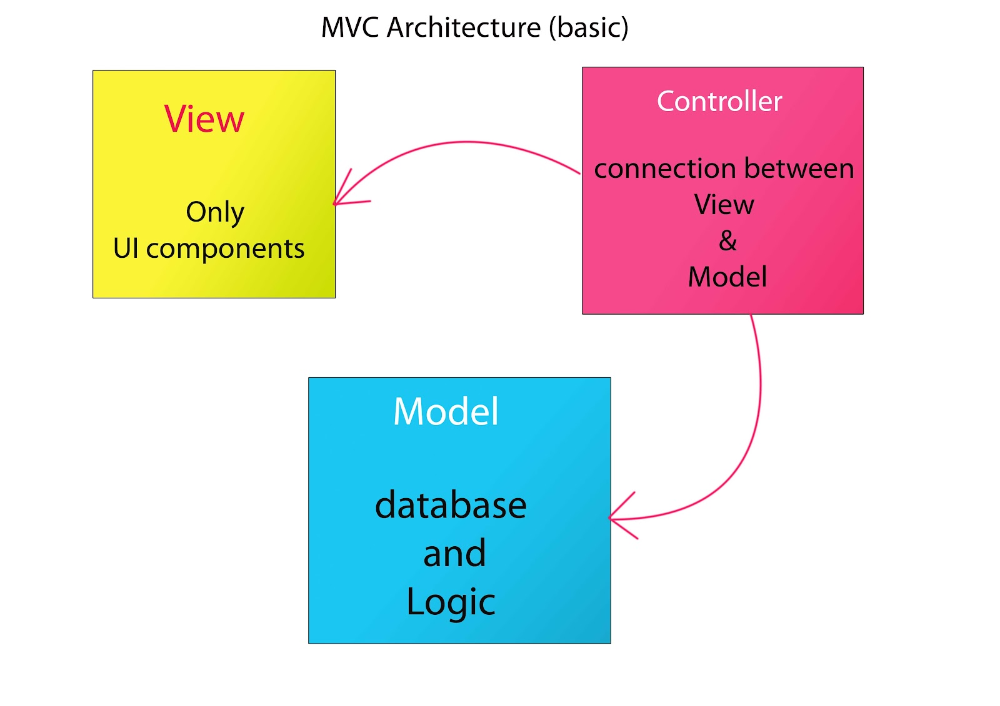
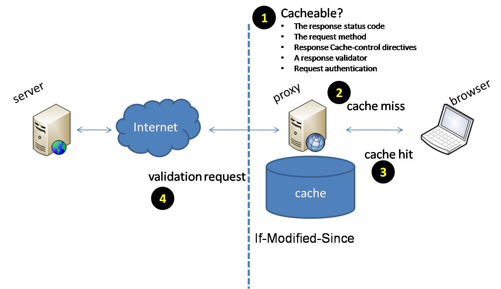

How browsers work User tries to visit a site Request IP through DNS lookup Send request for the data to that IP Request hits server and it decides what to do Server sends you a file containing page's contents and resources Browser renders the file (HTML, CSS, Javascript)
Client-side vs. Server-side Client-side: Things happening in browser Doesn't require internet access Server-side: Data shows up in request with method type GET POST Others, but not used as often. Server sends client data, which is rendered thorugh browser.
Languages HTML: Hyper Text Markup Language Building blocks for front-end web development The language your browser renders to display raw data on the webpage CSS: Cascading Style Sheets Mostly for styling (making it pretty) "classes" for elements to tag groups then apply looks JavaScript Changes page without reloading it Example: multiple steps in a registration form; data only sent at the end
Dynamic vs Static webpages Static for infrequently changed pages -- OSULUG Dynamic for interactive or frequently updated -- Facebook Dynamic can use lots of resources
MVC (Model View Controller) Views (templates) structure how user sees data should not contain logic  Models (objects) database tables attributes are columns Controllers (logic) which URL maps to which function isolate the logic here
Tools Virtual Environments isolated installation of language and dependencies Databases SQLAlchemy for Flask Others use MySQL, PostgreSQL, SQLite Migrations Add new columns to database without direct interaction Other option is destroy then recreate the DB
Caching  Different things in web development: Forms: This is what our user interacts with to send us data. When they submit a form, it's our responsibility to gather that information and store it in the database. Login: An integral portion to most web applications. We will be demo'ing this. Extra?: * Deployment strategies ** Apache (wsgi) -- Possibly a quick demo on how to set this up.
{kind=link}
{kind=link}